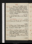
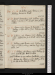
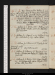
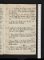
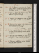

- About
- Diary
- People
- Events
- Reading
- Writing
- Meals
- Meetings
- Search

1831. Jan. 1. Sa.Self-Complacency, p. 10: Phrenology, p. 4. Homer, v. 421. Uwins calls: call on S Hodgets. 47 ½ / 51
Jan. 2. Su.Phrenology, 8 lines. Letter to W Cross. Homer, v. 493: Moore, Byron, Vol. II, p. 42. Call on Isa. Booth. Warm Bath, We. 48 ½ / 50 ½
3. M.Byron, p. 174. W Calls: Cookes sup; adv. Uwins. 48 / 50 ½
4. Tu.Homer, v. 544: Byron, p. 234. Call on Brayley (adv. Britton & Jones) & Levison: M W S dines; adv. Hodgets: Uwins calls, & Booth. Warm Bathe. 48 ½ / 50
5. W.Phrenology, p. 6. Homer, , v. 84: Byron, p. 358. Percy dines: Hodgets calls: suffoquée. 48 / 51
6. Th.Phrenology, p. 8. Museum; Edin. Reve. Homer, v. 189: Byron, p. 450. 48 / 50
7. F.Phrenology, p. 10. Homer, v. 274: Byron, p. 526. Museum; Hartshorne. Mes Jones & Maugham call n: Gisbornes call. 45 ½ / 48
8. Sa.Phrenology, p. 12. Homer, v. 380: Byron, p. 626. F R, & Mes Maugham & Wilks call. 43 ½ / 45
Jan. 9. Su.Phrenology, p. 14; revise. Homer, v. 480: Byron, p. 676. 43 ½ / 49
10. M.Astronomy, revise. Byron, p. 720. M Gisbne & Mn call: dine at C Jones’s, w. Lloyds, Rileys, Aldises, & Mes Booth & Gardner; invités Maugham & Wilkses, M P. Bannister, &Barnet, & Dell.48 ½ / 50
11. Tu.Berkeley, çala: Byron, p. 764. M calls. 46 ½ / 49
12. W.Homer, v. 570: Byron, p. 807, fin. Call on Melbournen, w. note: W calls: M W S & Percy dine. 46 ½ / 49 ½
13. Th.Astronomy, revise. Homer, v. 654: Life of Burke, fin. M Gisborne calls. 47 ½ / 50 ½
14. F.Homer, v. 725. Call on Melbournen, w. note, & M W S: dine at C Jones’s, w. Maughams & Wilkses: N G at tea n. Mackenzie dies . 48 ½ / 50
15. Sa.Astronomony, revise. Homer, v. 756. 47 ½ / 48
Jan. 16. Su.Astronomy, revise: Matter, p. 1. Homer, v. 834: D Juan, C. II/2. Call on Boothn & R Tn: Percy dines. 45 ½ / 49
17. M.Astronomy, revise. Homer, v. 909. Call on Northcote; adv. Rogers, pictor. Write to Ransom, Stowmarket. Percy dines. 48 ½ / 52
18. Tu.Astronomy, revise. Call on Melbourne: W calls. O’Connel arrestede.50 / 54
19. W.Astronomy, revise. Homer, , v. 101: Prior, Alma. M W S at tea. 52 ½ / 55 ½
20. Th.Astronomy, revise. Homer, v. 214: Don Juan, C. II/2, III. 53 / 57
21. F.Astronomy, revise. Homer, v. 325: Don Juan, C. IV. Sup at Reynolds’s. Write to E Grey. 52 ½ / 56
22. Sa.Matter, p. 3. Homer, v. 406: Don Juan, C. V. Aldis & A Smith call. 56 ½ / 60 ½
Jan. 23. Su.Matter, p. 5. Homer, v. 440: Don Juan, C. VI. R R calls n: call on Booth: Ws & Percy dine. 57 ½ / 59 ½
24. M.Matter, p. 7. Homer, v. 529. Sup at Martin’s, w. Heaphy, Caunter, 2 Landseers & Whitsen: Gisbornes call. 52 / 53
25. Tu.Matter, p. 8/2. Homer, , v. 102. A Smith calls: soir, Eff. Wilson’s, w. R T. Don Juan, C. VII. 48 / 51
26. W.Matter, p. 10/2. Homer, v. 206. M W Sn, M & Holm senr call: dine at Aldis’s, w. Nokes, Godbold & Rileys; advinvités Skeffington & Elliston. 44 / 49
27. Th.Matter, p. 11/2. Homer, v. 302. Revise. Call on F Bailey, twice n. 41 ½ / 47 ½
28. F.Astronomy, re çala. Homer, v. 405: V Errors, çala. Call on F Bailey: M W S calls: Hodgets sups. 45 / 50
29. Sa.Astronomy, 2 pages. Homer, 482. Call on Northcote: S Bannister calls n. 44 ½ / 48.
Jan. 30. Su.Astronomy, 3 pages. Homer, , v. 101: Don Juan, C. VIII, IX. S Bannister calls. 43 ½ / 45 ½
31. M.Astronomy, 1 1/2 pp; revise. Homer, v. 207. Museum; Halleye. W calls. Snow, 3 days.42 ½ / 45
Feb. 1. Tu.Matter, p. 13/2. Homer, v. 301: A Cunningham, Vol. IV, p. 142. A Smith calls: dine at Maugham’s, w. Wilks, Le Moores, Holm, Stuart & Dowling. 42 ½ / 46 ½
2. W.Matter, p. 14, & 1 page. Homer, v. 365: A Cunningham, p. 264. S Bannister calls. 43 ½ / 46 ½
3. Th.Virtue, p. 2/2. Homer, v. 425: A Cunningham, p. 352, fin. S Bannister sups. [T Hope dies.Nemours elected K of Belgianse. 43 ½ / 47 ½
4. F.Indisposede. Homer, v. 461: Tale of Tub, acts & 1 & 2. Affidavit, L Munningse: Museum; Halleye: call on Gyde. 48 / 49
5. Sa.Proof. Homer, v. 561: Siamese, çala. W, & A Smith call. Revolution of Modenae.45 ½ / 50 ½
Feb. 6. Su.Virtue, p. 3: invent Courage. Homer, , v. 102. R Rn, W & M call. Hamlet, acts 1 & 2. 46 / 48 ½
7. M.Virtue, p. 5/2. Homer, v. 201: Nero, çala. Caunter calls. 48 ½ / 57
8. Tu.Virtue, p. 6/2: Astronomy, 1/2 page. Nero, çala: Don Juan, C. X, XI. 55 / 61
9. W.Virtue, p. 7/2. Homer, v. 306: Don Juan, C. XII, XIII. Call on S Hodgets: M W S at tea. Bedchamber cleaned, 11 1/2 A Me. 58 ½ / 63 ½
10. Th.Virtue, p. 9/2. Homer, v. 429: Don Juan, C. XIV. Call on M Gisbornen: Mes Wood & Green call: sup at Reynolds’s, w. Helen & Stella Boaden. ecris male. 59 ½ / 64
11. F.Gout, 4 A Me. Virtue, p. 9. Homer, v. 510: D Juan, C. XV. Cooke, M Gisborne & A Smith call. 59 ½ / 65
12. Sa.Virtue, p. 11/2. Homer, v. 620: Don Juan, C. XVI. A Smith calls. Liebenrode. 59 ½ / 63
Feb. 13. Su.Virtue, p. 12/2. Homer, v. 709: On Grenville, pp. 86. W calls. 58 ½ / 62
14. M.Virtue, p. 13/2, fin. Homer, , v. 36: D’Israeli, Lity Character, p. 100. M W S dines. End of Essays. 58 ½ / 60 ½
15. Tu.Homer, v. 130: D’Israeli, p. 254. Call on Rickmann & Roddn: A Smith calls n: N G at tea: theatre, 1/2 W Tell e, & Stanfield; adv. Cookese . Rubicon deferred. 56 / 59 ½
16. W.Last Proofs. Write to Rickman. Homer, v. 203. Soirée mrs Wood’s, w. Spurzheim, Holm, Owen, 3 Aldises & Whitelocke. Crisis. Last Proofs. 54 ½ / 60
17. Th.Letter to S W Scott. Homer, v. 302. W dines: call on Northcote; adv. Constable. A Smith calls. 55 / 60
18. F.Letter to S W S, p. 4, 5. Homer, v. 422. Museum; Uxor Hebraicae: Cooke calls: dine at M W S’s. 52 ½ / 56 ½
19. Sa.Write to Sir W Scott. Homer, v. 511: D’Israeli, p. 366, fin. Rickman calls: call on Mackintoshna. 51 ½ / 57
Feb. 20. Su.Letter to E Grey, &c. Homer, v. 579: Abydos. A Smith & W call: call on Mackintosh: Pickersgill’s, w. miss Crump, Martin, Witshen, Owen, Bowring, Granville, Macfarlane, Poole, Hill52 ½ / 56 ½
21. M.Write to E Grey, Melbourne & Brougham. Homer, , v. 130. Theatre, Fazio, act 3, 4, 5e. M W S, M Gisbornena, & S Bannister call. 49 / 55
22. Tu.Homer, v. 210: Montaigne, çala. A Smithn & Cooke: call on Gisborne. Thoughts on Man, copies delivered. 50 / 52 ½
23. W.Homer, v. 312: Abydos. A Smith & W call: call on H Holmn: meet Reynolds: sup at Jacob’s. 49 ½ / 55
24. Th.Homer, v. 410: Hor. Walpole, Reminiscences, p. 65. Stevenson & H Holm call: Spurzheim’s Lecture; adv. Drew & Levisone: call on Maughamn: sup at Hodgets’. illeg.50 ½ / 56 ½
25. F.Homer, v. 515: Walpole, p. 120, fin. Mauvaise nuite. 53 / 58
26. Sa.Homer, v. 625: Chenevix. Holm & A S call. List of consulterse. Letter fr. EGrey: write to Mackintosh. 53 ½ / 58
Feb. 27. Su.Homer, v. 720: 1/2 Giaour. Call on M W S (adv. Julia)R Tn, & Booth ; adv. Rowbotham: W calls. 52 ½ / 57 ½
28. M.Homer, v. 802: 1/2 Crochet Castle. Call on Rothwel: Stevenson, Kirklandsn & C Landseer call: tea Gisborne’s, w. M W S, Hoggs, & Coulson. 52 ½ / 58 ½
Mar. 1. Tu.Homer, v. 847; , v. 60: Crochet Castle, fin. Call on Croly, mrs Kirkland & Northcote. Plan of Parliamty Reform opened, debate 7 dayse.51 ½ / 58
2. W.Letter fr. Sir W Scott: Letter to do. Homer, v. 172. A Smith calls: soirée mrs Wood’s, w. Leicester Stanhope, Campbel, Holm, H Payne, Morgan, miss Spence & M W S. 53 / 60
3. Th.Letter Write to Sir W Scott. Homer, v. 271. Dine at Woodifield’s, w. Lavigne, mrs Heatley & another. M calls n. 58 / 61 ½
4. F.Homer, v. 372: Robertson, Scotland, p. 60. Call on Mn: Kirkland calls. Biene.58 / 63
5. Sa.Homer, v. 471. Booth calls impertinente: call on Mackintosh: Salter tea & supper. 59 / 61

Mar. 6. Su.Homer, , v. 110: Robertson, p. 128. W calls: Call on R T: Pickersgil’sH Bulwer (?)Sigmond{,} Kenneys, A Cunningham, Crump, Ayrton, Westmacot, Munro, Poole, Picken, Witsen59 / 63
7. M.Write to Napier & Rickman. Homer, v. 220. Call on Jefferyn. Theatre, Brutus; adv. Stanhopee: A Smith calls: sup at Reynolds’s. 58 / 62 ½
8. Tu.Invent Sublime. Homer, v. 327: Burke on Sublime, p. 86. W calls, met. 55 / 62
9. W.Homer, v. 435: Burke, p. 120. M W S & W Currann call: meet W & Mathews: call on Colburn, N Road. 57 / 61
10. Th.Sublime, çala. Homer, v. 530. Call on Olliern & Munro: theatre, Cinderella; adv. Stanhopee. 53 / 59
11. F.Homer, v. 600: Burke, p. 172, fin. Call on Ollier & Northcote. 56 / 59 ½
12. Sa.Homer, v. 700. Munro & A S call: call on F Rn, & Cooke; adv. Shaw & 3. 54 ½ / 59

Mar. 13. Su.Homer, v. 837. Call on Booth: W calls. 55 / 59 ½
14. M.Homer, , v. 102. Call on Constable, & F Rn: Martin’s, w. Pickersgills, Ayrton, Crumps, Arnot, Poole, Alcock, A Cunningham, E Landseer, Croly, Knowles, Caunter, Stebbing, Foggo, J Taylor, Picken, Britton, Pine. First Readinge.55 / 59
16. Tu.eHomer, v. 138: C Williams, revise. Dine at M W S’s: N G calls n. F R calls. Thoughts on Man F R53 ½ / 58
16. W.Homer, v. 241: C Williams, revise. W & Leicester Stanhopen call: call on Olliern, W Currann, Crump, & mrs Wood ; adv. L Stanhope (miss Hall). 56 ½ / 62
17. Th.Homer, v. 328. Caunter, Stebbing & A S calls: call on Ollier: theatre, Highways & Bywayse. 60 / 66
18. F.Proofs. Burke, çala. W Curran calls: call on mrs Kirkland. 23610058 ½ / 63
19. Sa.Sublime, çala. Homer, v. 432. A S calls: call on Morris, for H P: M W S at tea: sup at Hodgets’. 55 ½ / 60 ½
Mar. 20. Su.Homer, v. 522: Stebbing, Dante. Pickersgil’s, w. Bulwer, C Sheridan, Martins, Owen, Morgan, Granville, Poole, Hardwick, Knowles, Sigmond, Kenton, Alcock, Picken. illeg.55 / 61 ½
21. M.Homer, , v. 103: Stebbing, 1/2 Petrarca. Dine at Ollier’s: soirée Granville’s, w. Pickersgils, Poole & Deville; La Blache. 57 ½ / 61 ½
22. Tu.Write to Napier. Homer, v. 204. E Prentis calls. Second Reading, 302 to 301e.57 / 60 ½
23. W.Homer, v. 311. F R calls: call on C & Bn & Olliern. 54 ½ / 59 ½
24. Th.Homer, v. 404. M & White call: dine at Knowles’s, w. Paris, Dr & mrs Moore, Gilbert, Freeman & mother, & 2: W Curran calls n.Lloyd51 / 52 ½
25. F.Homer, v. 501. Proofs. A S calls: call on Orme (Longman’s): British Artists; adv. Wordsworth, Morton , Hofland , Judkin , Hill , mrs Baddams , T Ht , E P & We: call on Northcote. 50 / 53 ½
26. Sa.Homer, v. 600: Stebbing, Petrarca, fin. Picken & Cooke call. 51 ½ / 60
Mar. 27. Su.H Sublime, çala. Homer, v. 703: Stebbing, Boccaccio. W calls. 56 ½ / 62
28. M.Invent Commentary on B: Sublime, çala. Homer, v. 746; , v. 63. A S calls: dine at Ollier’s, w. Allen. 57 / 64
29. Tu.Homer, v. 167: Seneca, De Brevitate, c. 6: Stebbing, 1/2 Tasso. Call on C Jones: W Curran calls, & sups. 56 ½ / 59
30. W.Sublime, çala. Homer, v. 267: Stebbing, Tasso, fin: A Alexander, p. 60. W calls: call on Constable. 54 / 59 ½
31. Th.Sublime, çala. Homer, v. 369: Destiny, p. 92. Dine at M W S’s, w. Percy; adv. mrs Hogg: S Bannister, soir. 52 ½ / 60
Apr. 1. F.Sublime, çala. Homer, v. 461: Destiny, p. 336. A Smith calls. Write to Ollier. Caleb Williams in one volume publishede. 53 ½ / 58
2. Sa.Sublime, p. 2/2. Homer, v. 566: Destiny, Vol. II, p. 50. Call on Leic. Stanhopen & Paris. 53 / 58
Apr. 3. Su.Dur. Homer, v. 683: Destiny, p. 194. Call on M W S; adv. 4 Rs: Percy dines: Pickersgil’s, w. Crump, Ayrton, Granville, Martin, Cunninghm, Poole, Owen, Knowles, Patmore, Harrel, Kenton, Munro, Witsen. 54 / 58 ½
4. M.Indisposede. Homer, v. 776: Destiny, p. 407; Vol. III, p. 67. Granville’s, w. Martins, Amyot, Poole, Knowles, Witsen & HugginsHopper (Jerningham). Quick dies. 54 / 58
5. Tu.Sublime, p. 3/2. Homer, v. 867: Destiny, p. 167. Call on Devillen: theatre, Azor; adv. Stanhope, Gent & Barhame. 53 / 58 ½
6. W.Sublime, p. 5/2. Homer, , v. 105: Destiny, p. 399, fin: A Alexander, p. 339. Call on Olliern. 55 / 61
7. Th.Sublime, p. 6. Homer, v. 208: Bayley, p. 116. Emperor of Brasil abdicateseJ Bannister 70/1 Jas Heath 73.Miss Foote marriede. 56 ½ / 63
8. F.Sublime, p. 8/2. Homer, v. 315: Bayley, p. 170. Theatre, Hernani; adv. Skeffington, Talfourd , R R , Jerrold & We. 59 ½ / 62
9. Sa.Sublime, p. 10/2. Homer, v. 422: King’s Secret, p. 42. Jerningham calls: call on S Hodgets: M W S at tea. Letter from Ollier. 58 / 63
Apr. 10. Su.Sublime, p. 10. Homer, v. 1515: Secret, p. 145. Call on Colburn & on Ollier: mrs Wood’s, w. Leic. Stanhope, 2 Holms, Whitelock, mrs Birkbeck & miss Macauley. 60 / 64
11. M.Feverede. Homer, v. 604: Secret, p. 228. Museum; sir K Digbye. P P & wife dine: sup at Martins, w. mr & mrs Hall, Little, 2 Landseers & Witsen; adv. Caunter. 60 / 64
12. Tu.Sublime, p. 12/2. Homer, v. 702: Secret, p. 318. White calls: call on Northcote. 60 / 66
13. W.Sublime, p. 12. Write to Colburn. Homer, v. 761: Secret, Vol. II, p. 180. Ws call: N G at tea: theatre, K John, acts 2, 3 (adv. Talfourd)e. 62 ½ / 68
14. Th.Study cleanede. Homer, , v. 107: King’s Secret, p. 308; Vol. III, p. 155. Museum; Ashburnhame: Stevenson calls. 57 / 62
15. F.Rhumee. Homer, v. 218: King’s Secret, p. 322. Museum; Crichtone: sup at Reynolds’s, w. Caroline & Stella Boaden. 10 dayse. 59 ½ / 64 ½
16. Sa.Homer, v. 309: King’s Secret, p. 377, fin. Theatre, Legion of Honour; adv. Talfourd & H Paynee. 61 ½ / 64

]XXX


Apr. 17. Su.Homer, v. 409. Call on Ollier: callBentley calls n: Evans (Euston Street)au soir. 61 / 64
18. M.Hoarsenesse. Homer, v. 522. Bentley, Kirkland & Lubés call: M W S at tea. Life of Carey, cala. 57 ½ / 66
19. Tu.Homer, v. 616: Birch, Eliz, çala. Numbers for England & Wales to continue, 299 to 291e.57 ½ / 63 ½
20. W.Deloraine, çala. Write to M. Homer, , v. 125. W calls: call on Masterman (for M) & E Wilsonn: call on Bentley (soir); adv. Ollier. Prorogation of Chamberse.59 / 64
21. Th.Write to Bentley. Homer, v. 214. Call on Cooke, w. M J. 59 / 63
22. F.Homer, v. 314: Bayley, p. 216. Call on Jerninghamn: W calls: theatre, Maid of Honoure. Prorogatione.60 / 64 ½
23. Sa.Homer, v. 424: Maid of Honour. Call on Ollier: meet Edw. Poole. forego. Leic. Stanhope marriede.July 24, 183 Dissolutione. 60 ½ / 66
Apr. 24. Su.Homer, , v. 109: Bayley, p. 336. Call on Colburnn, & M W S; adv. CarterCarlton & Julia: & on Colburn, au soir. 62 ½ / 65
25. M.Deloraine, Preface, p. 1. Homer, v. 209. Owen calls: meet Rogers & R Sharp. 62 / 65 ½
26. Tu.Homer, v. 309. Martin & son call: call on (Colburn &)Bentley ; adv. Ollier: au soir, on M W S. 62 / 65 ½
27. W.Homer, v. 400: Quixote, çala. W & Evans call: Illuminations; meet Pickersgil. Contract: see Thursday. 62 / 65
28. Th.Homer, v. 503. Remittance, C & B: call on Orme (rain): theatre, Alfred by Knowles; adv. R Re. Meet Judkin. 62 / 63 ½
29. F.Homer, , v. 113: Quarterly, on Sadler, No. 89. Call on Judkinn: theatre, Exquisites; adv. Rogerse. 59 / 63
30. Sa.Deloraine, çala. Homer, v. 213. Cramond & M W S call: call on Northcote. 59 ½ / 63
May 1. Su.Deloraine, p. 2/2 to 4/2. Homer, v. 307. Call on Gisbornes & mrs Wood: W dines; adv. M W S: Pickersgil’s, w. Lardner, Patmores, Ayrton, Martins, Poole, Sigmond, Witsen, Picken, Morgan, Munro, Harrel, Trueba, 60 / 65
2. M.Write to M. Homer, v. 345: Bayley, p. 521, fin. Exhibition (rain)e. 61 ½ / 63 ½
3. Tu.Deloraine, çala. Homer, v. 414. Kirkland, Wheaton (Copenhagen), Anderson jr, Tait, & Bayley call. 59 ½ / 65
4. W.Deloraine, p. 4. Homer, v. 514: Philaster, çala. Bayley calls n. 62 / 66 ½
5. Th.Deloraine, p. 6/2. Homer, v. 611. Sup at Reynolds’s, w. Caroline & Sophia Boaden. 59 / 62
6. F.Deloraine, p. 6. Homer, , v. 102: A Alexander, Vol. II, p. 161. Seek Mackintosh: call on Cauntern & M W S. Cold weather.56 ½ / 61
7. Sa.Homer, v. 201: A Alexander, p. 327, fin. 55 / 58 ½
May 8. Su.Deloraine, p. 8. Homer, v. 305: Maid’s Tragedy. Call on Booth, & Hodgetsn. 54 ½ / 59
9. M.Deloraine, p. 10/2. Homer, v. 394. Martin’s, w. Alcock, Willis, Heaphy, Caunter, Bergen, &Picken & son, &Whitsen & Morgan. 56 / 62
10. Tu.Deloraine, p. 11/2. Homer, v. 452. Call on Picken. 57 / 61 ½
11. W.Deloraine, p. 12/2. Homer, v. 515: Bonduca, acts 1 & 2. 58 / 63 ½
12. Th.Apathye. Homer, , v. 102: Bonduca, act 3: Holland Tide, p. 178. M W S & N G at tea. 58 / 65 ½
13. F.Deloraine, p. 13. Homer, v. 201. Call on Alcockn, & Northcote ; adv. Prior: theatre, Emissary; adv. Hill, R R & Poolee. 60 ½ / 65 ½
14. Sa.Deloraine, p. 14/2. Homer, v. 305: Holland Tide, p. 286: Munster Festivals, p. 70. Call on Stebbingn. 59 / 62 ½
May 15. Su.Deloraine, p. 15/2. Homer, v. 407: Festivals, p. 267. Bayley & W call: Pickersgil’s, w. Martins, Alcock, Poole, Crumps, Sigmond, Bowring, Prior, C Stuart, Knowles, Fuseli, Owen, Macfarlane, Dr Hamilton, Ayrton, Granville, Harrel. 57 ½ / 64
16. M.Festivals, p. 355; Vol. II, p. 52. M W S at tea: Granville’s, w. Knowles, Fuseli & Poole. 61 / 66
17. Tu.Deloraine, p. 16. Homer, v. 515: Festivals, p. 112. Call on Bentley; adv. Ollier. 63 / 67 ½
18. W.Indisposede. Homer, , v. 107: Festivals, p. 326; Vol. II, p. 86. Rothwell’s, w. M W S; sitsee. 64 / 68 ½
19. Th.Deloraine, p. 18/2. Homer, v. 211. W calls: call on Baily: theatre, 4/7 Napoleon; adv. Poolee. 65 / 69
20. F.Deloraine, p. 19/2. Homer, v. 305: Festivals, p. 243. Mitchel (Tyne Mercury), & Prideaux (Plymouth) call: sup at Jacob’s. (he called at No. 11.)66 ½ / 69 ½
21. Sa.Deloraine, p. 19. Homer, v. 402: Festivals, p. 316, fin. Sup at Hodgets’. Prideaux calls. 63 / 68 ½
May 22. Su.Rhumee. Homer, v. 472: D’Israeli, p. Cha. I, Vol. V, p. 236: Collegians, p. 102. Call on Olliern. 65 ½ / 68 ½
23. M.Deloraine, p. 20. Homer, v. 585: D’Israeli, p. 300. Call on F Rn: M W S at tea: sup at Martin’s, w. Alcock, Bergen, Heaphy, Willis, Wheatsen, Thomas, Macpherson, &C Landseer & Cumming. 65 ½ / 70 ½
24. Tu.Homer, v. 650: D’Israeli, p. 475, fin: Collegians, p. 138. Judkin calls. 67 / 70 ½
25. W.Deloraine, p. 21. Homer, v. 753: Vidocq, p. 60. W calls: meet Black. 67 / 71 ½
26. Th.Indisposede. Deloraine, p. 22/2. Homer, v. 850: Vidocq, p. 160. W Hazlit & F R call: sup at Reynolds’s, w. Bunn, M Morton, & Car. & Sophia Boaden. Peter Pilcher dies.64 ½ / 70
27. F.Homer, v. 897: Vidocq, p. 237; Vol. II, p. 54. Sup at Cooke’s, w. M J & miss Savage. Deorsume.64 / 68
28. Sa.Deloraine, p. 23/2. Write to Pickersgil. Homer, , v. 104: Vidocq, p. 126. M W S at tea. Age of S Johnson equallede. 63 ½ / 67
May 29. Su.Deloraine, çala; p. 24. Homer, v. 216: Vidocq, p. 193. Incessant rain. 64 / 65 ½
30. M.Deloraine, p. 26. Homer, v. 321: Vidocq, p. 266. Call on Ollier, N Burlington Street (St Leon). 65 / 65 ½
31. Tu.Deloraine, p. 28/2. Homer, v. 423: Vidocq, Vol. III, çala. Call on Booth: Woodifield’s, w. a party. 63 / 64 ½
June 1. W.Deloraine, p. 29. Homer, v. 517: Vidocq, çala. W dines: theatre, Coriolanus, & Little Corporal; adv. Talfourde. 62 ½ / 66 ½
2. Th.Deloraine, p. 30. Homer, v. 620: Vidocq, çala. Call on Miles(St Leon): W at dinner. 63 / 68 ½
3. F.Deloraine, p. 33. Homer, v. 724: Fouché, çala: Cupid’s Revenge, act 1. Call on F Rn, w. note: M W S at tea. Here begins the study of the second wife of Deloraine.64 / 69 ½
4. Sa.Deloraine, p. 34. Homer, v{.} 804, fin: La Bruyère, p. 40: Cupid’s Reveng{e,} fin. 66 / 69 ½
June 5. Su.Deloraine, 7 lines. Virgil, Æneis, v. 308: Julie, çala: Cymbeline, çala. Call on Ollier: Hudsons call: mrs Wood’s, w. Holm & M W S, &c. 67 / 70 ½
6. M.Deloraine, çala. Virgil, v. 533: D Quixote, Kitely, Wonder, çala. 65 ½ / 66 ½
7. Tu.Deloraine, çala. Virgil, v. 760: Boccaccio, çala: Zaire, actes 1, 2, 3. Call on Mackintosh(adv. Lardner) & Northcote. 62 ½ / 64 ½
8. W.Deloraine, çala. Virgil, II, v. 202. Mentevole: Malfy, acts 1, 2, 3. Call on Rothwell: Mrs Wood’s, w. L Stanhopes, M W S, Bergen, Holm & mrs Bartley. Mrs Siddons dies . 66 ½ / 66 ½
9. Th.Deloraine, çala. Write to Brougham. Virgil, v. 402: Revenge: Cleone: Malfy, fin. Call on Northcote: W calls. 64 ½ / 67 ½
10. F.Deloraine, çala. Virgil, v. 620: Josephus, çala. M W S at tea: Hodgets sups. 66 / 68
11. Sa.Deloraine, çala. Virgil, v. 804: Volpone, çala: Zaire, fin: Fatal Dowry. 66 / 69
June 12. Su.Deloraine, p. 37/2. Virgil, III, v. 208. Call on Booth. 67 ½ / 70
13. M.Indisposede. Virgil, v. 402: Wonder, fin: Hardy Vaux, p. 125. E Prentice & W call: call on Northcote. 68 / 70 ½
14. Tu.Deloraine, p. 39/2. Virgil, v. 603: H Vaux, p. 191. W calls n. 68 / 71
15. W.Indisposede. Virgil, v. 718: H Vaux, p. 288, fin: Collegians, p. 154. Uwins & Griffith Jones call. 68 ½ / 71 ½
16. Th.Deloraine, p. 41/2. Virgil, IV, v. 205: Collegians, p. 194. Sass’s, w. Martin, Rothwel, Pickersgil, L Hunt, Croly, Britton, Clint, W Hopwood, Uwins & 2, & Dr Stuart. Call on Northcote. \ Holms67 ½ / 70 ½
17. F.Deloraine, p. 41. Virgil, v. 400: Collegians, p. 220. M sups. 67 ½ / 69
18. Sa.Deloraine, çala. Virgil, v. 606. Aldises call. 66 ½ / 69
June 19. Su.Deloraine, p. 43. Virgil, v. 705; V, v. 103. W calls: call on M W S; adv. Julia. 67 ½ / 70
20. M.Deloraine, p. 44: St Leon, Advertisement. Virgil, v. 302. Caunters & St John call: N G at tea: tea Crump’s, w. Owen, Bruce, Arnot, Clarke & Hare: Granville’s, w. Pickersgills, Ayrton, Bowring & Dr Henderson. 67 / 70 ½
21. Tu.Proofs of St Leon. Call on Northcote: meet Constable: M W S at tea.Parliament opense.68 / 73
22. W.Proofs of St Leon. St Ronan’s, çala. Percy dines; adv. W. 69 / 72 ½
23. Th.Deloraine, p. 46. Virgil, v. 501: St Ronan’s, çala. Sup at Hodgets’. 70 / 73
24. F.Deloraine, p. 48. Virgil, v. 707: St Ronan’s, çala. Tea Crump’s, w. mes Nation, Alexander, 2 Prices, col. Walker, Clarke, 2 Cochranes: adv. Owen. call on Northcote. 69 / 70
25. Sa.Torpore. Virgil, v. 871: St Ronan’s, çala. White, M W S & Percy call. 66 / 67 ½
June 26. Su.Deloraine, p. 49/2. Virgil, VI, v. 204: St Ronan’s, çala. Call on Booth; adv. 2 Hodgets: E Poole calls. 64 ½ / 66 ½
27. M.Deloraine, p. 51/2. Virgil, v. 410: St Ronan’s, çala. Cooke sups. 64 ½ / 67
28. Tu.Deloraine, çala. Virgil, v. 607. W dines. 64 / 66
29. W.Deloraine, çala. Virgil, v. 807: Theodosius, çala. Sup at Reynolds’s, w. F R. 64 / 66 ½
30. Th.Deloraine, 12 lines. Virgil, v. 901: Nanine. Call on Northcote, & M W Sn. Meet M Burney. Roscoe dies.63 ½ / 66 ½
July 1. F.Stupore. Virgil, VII, v. 120: Right of Succession, çala. St Leon in one volume publishede. 65 /69
2. Sa.Deloraine, 6 lines. Virgil, v. 301: Lammermoor, p. 280. M W S calls. 64 ½ / 71
July 3. Su.Virgil, v. 405: Lammermoor, p. 333; Vol. II, p. 46. Dine at White’s, Isleworth, w. Geo, fr, & wife, &c; adv. Hugheses: E Poole calls n. 68 / 70
4. M.Virgil, v. 622: Lammermoor, p. 324; Vol. III, p. 131, fin. Sup at Martin’s, w. Heaphy, Caunters, Alcock, Wheatsen, Foggo, Fransom. 68 ½ / 72
5. Tu.Stolide. Matilda, p. 116. W calls. 70 / 72 ½
6. W.Write to Ollier, on St Leon . Virgil, v. 817: Matilda, p. 252. Call on Northcote. (meet Bentham.) Reform Bill, Second Reading, 367 to 231e.71 / 74 ½
7. Th.Head Achee. Virgil, VIII, v. 208: Matilda, p. 379 fin. M W S calls: call on E Poolen: dine at Hargrave. 70 ½ / 74
8. F.Deloraine, p. 51. Virgil, v. 370: Collegians, p. 256. Dine at Robinson’s, w. M W S & D’Andradas; adv. Almeyda Garret: W sups. 69 / 72
9. Sa.Deloraine, çala. Virgil, v. 540: Collegians, p. 330. 71 / 77 ½
July 10. Su.Deloraine, çala. Virgil, v. 731: Collegians, Vol. II, p. 164. 11th, from 3 to 5, sapiens. begin, 138.Rain.72 ½ / 67 / 70
11. M.Deloraine, p. 52/2. Virgil, IX, v. 206: Count Basil, acts 1, 2, 3: Collegians, p. 349. Hargrave calls n. 69 / 72
12. Tu.Deloraine, p. 52. Virgil, v. 401: Collegians, Vol. III, p. 215. M W S at tea. Eight Divisions on Reforme.70 / 71
13. W.Deloraine, p. 53. Virgil, v. 620: Collegians (begin 255), p. 322, fin. Call on Judkinn (w. a note) & Pickenn. Veiled Prophet. Northcote dies.68 ½ / 70
14. Th.Deloraine, p. 54. Virgil, v. 818: Laurie Todd, p. 61: Theatre, School for Coquettese. 67 / 68
15. F.Deloraine, çala. Virgil, X, v. 122: Island Bride, Canto I, II, III: Hungarian Tales, p. 95. Picken calls n. 66 / 69
16. Sa.Deloraine, çala. Virgil, v. 307: Hungarian, p. 235. Call at Northcote’s, & on Hilman; adv. frere. 66 ½ / 67 ½
July 17. Su.Deloraine, p. 56/2. Virgil, v. 412: Hungarian, p. 373. Zoological, w. Bailey & Griffith (meet Trueba)e: R Taylor & Reeve call. 66 / 69 ½
18. M.Deloraine, p. 58/2. Virgil, v. 605: Hungarian, p. 427. M W S at tea: Martin’s, w. Bowring, Alcock, Brockledon, Caunter, Stebbing, Wheatsen, Thomas, Landseer, Dilkeses. 67 / 69
19. Tu.Virgil, v. 706: Hungarians, Vol. II, p. 188. British Institutione: call on Hilman, Crumpn, & Mn. 66 ½ / 68 ½
20. W.Deloraine, p. 59/2. Virgil, v. 908: Hungarians, p. 250; Vol. III, p. 66. W calls n: N G at tea: Hargrave & M sups. 66 ½ / 67 ½
21. Th.Deloraine, çala. Virgil, XI, v. 202: Hungarians, p. 76. M W S & Percy at tea. 67 / 69
22. F.Languore. Virgil, v. 301: Hungarians, p. 339, fin. Sup at Reynolds’s. Leopold inauguratede.65 / 67 ½
23. Sa.Virgil, v. 375: P & Virginia, çala: Hermsprg, p. 159. Call on miss Northcotena: Bulwer’s, w. La. Cork, sir J Doyle, Bernal, Bowring, Granville, Bulwer senr, & M W S. opening of Chamberse.64 / 67.
July 24. Su.Virgil, v. 506: Hermsprong, p. 244. Cooke, Evans & Osler (Birmingham) call: W, M W S & Percy dine. 64 ½ / 68 ½
25. M.Deloraine, çala. Virgil, v. 708: Evelyn & Pepys, on 1666: Hermsprong, Vol. II, p. 96. Cooke sups. Dreams. 66 / 69
26. Tu.Virgil, v. 915: Odyssea, v. 124: Hermsprong, p. 199. Siddons’s; adv. Boaden & mrs Hogg: sup at Jacob’s. 67 / 73
27. W.Deloraine, çala. Virgil, XII, v. 215: Island Bride, çala: Hermsprong, p. 243; Vol. III, p. 144. Percy dines: W au soir. 70 / 76 ½
28. Th.Deloraine, revise. Virgil, v. 410: Hermsprong, p. 268, fin. Solar Microscope: 4 Hudsons at tea. 71 ½ / 76 ½
29. F.Constipe. Reminiscence, 4 pages. Virgil, v. 613: St Ives, çala. 72 ½ / 77 ½
30. Sa.Deloraine, 8 lines. Virgil, v. 806: St Ives, çala. Call on miss Northcote: Osler & Evans sup. 71 / 76
July 31. Su.Deloraine, 2 pages. Virgil, v. 952, fin: St Ives, çala. 71 ½ / 78 ½
Aug. 1. M.Deloraine, 1 1/2 pp. Homer, Odyssea, v. 286: St Ives, çala. Dine at M W S’s, w. Percy; adv. D’Andradas, Almeyda Garrets, & L & R Robinson, & Marreco. 71 ½ / 73
2. Tu.Deloraine, p. 64. Homer, v. 444: Galt, Actors, çala. Theatre, Du Barrye. 71 / 73
3. W.Deloraine, p. 65/2. Homer, II, v. 84: Galt, çala. 71 / 72 ½
4. Th.Nervouse: Constip. Galt, çala: C Cibber, p. 74. W dines: call on Pickenn. 70 / 73 ½
5. F.Deloraine, p. 65. Homer, v. 160: C Cibber, p. 128. 71 / 73
6. Sa.Deloraine, çala. Hungarian, p. 54: Cibber, p. 174. M W S at tea. Hargrave sups. 70 / 73
Aug. 7. Su.Castore. Homer, Bacchus, vv. 59: L Edw. Fitzgerald, p. 230: Cibber, p. 218. 70 / 72
8. M.Languore. Homer, Apollo, v. 82: Fitzgerald, p. 307; Vol. II. Cooke calls. 69 ½ / 73 ½
9. Tu.Homer, v. 161: T W Tone, p. 168. W calls: Cooke sups. 71 / 74 ½
10. W.Deloraine, p. 67 / 2. Homer, v. 241: T W Tone, çala. Call on miss Northcote. 69 ½ / 72 ½
11. Th.Deloraine, p. 68/2. Homer, Odyssea, v. 266. L Kenney & L Badams call: theatre, Fricandeaue. 69 ½ / 73 ½
12. F.Notes, 4 A M. (rhume)e. Homer, v. 348: T W Tone, çala. 69 / 74
13. Sa.Deloraine, p. 69. Homer, v. 434: T W Tone, çala. 70 / 73
Aug. 14. Su.Deloraine, p. 71/2. Homer, III; v. 114: La Bruyère, çala. Call on Booth: W calls: M W S at tea. 68 / 71 ½
15. M.Deloraine, p. 72. Homer, v. 200: Roubigné, p. 118. Tea Kenney’s, w. Badamses, Carlyles (Edinburgh), 4 Mortons, & M J. Massacre of Warsawe.69 / 72 ½
16. Tu.Rain. Homer, v. 300: La Bruyère, Theophrastus, çala. Meet Howard Payne. 67 ½ / 70
17. W.Deloraine, p. 73/2. Homer, v. 420: La Bruyère, çala. Cooke & Picken call. 68 ½ / 71 ½
18. Th.Deloraine, p. 75/2. Homer, v. 497: Simple Story, p. 102: Wordsworth, çala. Sup at Reynolds’s, w. F M R & SophStella Boaden. Io!67 ½ / 70
19. F.Deloraine, 6 lines (M Chronicle). Homer, IV, v. 124: Simple Story, p. 169. M W S at tea: meet Hargrave. 66 ½ / 68 ½
20. Sa.M J. Gale. Homer, v. 215: Simple Story, p. 320, fin. White calls: theatre, My Wife, or my Placee. 63 ½ / 68 ½
Aug. 21. Su.Deloraine, p. 77/2. Homer, v. 301: Coleridge, çala. Call on Cooke. 66 / 69
22. M.Deloraine, p. 78. Homer, v. 413: F W N Bayley, çala. N G at tea. Deorsum, 3 dayse.66 / 69
23. Tu.Deloraine, p. 80: Homer, v. 513: Bayley, çala. M W S at tea. 67 ½ / 73
24. W.Deloraine, p. 81: Homer, 624: La Bruyère, çala. 69 / 71 ½
25. Th.Deloraine, p. 82. Homer, v. 741: Emily Montague, Vol. I68 / 70 ½
26. F.Deloraine, p. 84/2. Homer, v. 847: Dolph Helliger; Del’Arbre. 67 ½ / 70
27. Sa.Deloraine, p. 86/2. Homer, , v. 148: E Montague, Vol. II, p. 176. W calls: call on miss Northcoten. 68 / 72
Aug. 28. Su.Deloraine, p. 88/2. Homer, v. 248: E Montagu, p. 240: Bracebridge, çala. Call on Pickens (Augustus Street), w. M J. 68 ½ / 71
29. M.Deloraine, p. 89. Homer, v. 347: E Montague, Vol. III, p. 68. Theatre, Richard III (Kean)e. meet Crone. 68 / 72 ½
30. Tu.Deloraine, p. 90. Homer, v. 423: E Montague, p. 164. Hargrave calls. 68 / 71 ½
31. W.Deloraine, p. 93/2. Homer, v. 493: E Montague, p. 223; Vol. IV, p. 126. M W S at tea. 69 ½ / 70 ½
Sep. 1. Th.Rain. Deloraine, 12 lines. Homer, , v. 101: E Montagu, p. 213, fin: Sir Tho Lawrence, çala. 66 / 67
2. F.Rhumee: Deorsume. Homer, v. 210: Bacon, çala. Theatre, Othello (Kean); adv. Williamse. Deorsume.63 / 66 ½
3. Sa.Deloraine, p. 95. Homer, v. 331. W calls. 61 ½ / 67.
Sep. 4. Su.Deloraine, p. 98/2. Homer, , v. 121: Life of Sir Tho. More, p. 57.Cooke calls: call on Ollier: M W S at tea. 62 ½ / 68
5. M.Deloraine, p. 100. Write to E Grey. Homer, v. 206. Meet Bannister & H Payne: theatre, Overreach; adv. Williamse. 67 / 70 ½
6. Tu.Deloraine, p. 102. Homer, v. 347: Merimée, Charles IX, p. 78. Holm calls. 67 ½ / 69
7. W.Deloraine, p. 104/2. Homer, , v. 120: Charles IX, p. 232. Call on miss Martin. Surrender of Warsawe. 65 ½ / 69
8. Th.Deloraine, p. 105/2. Homer, v. 235: Charles IX, p. 383, fin. Coronatione.63 / 67
9. F.Deloraine, p. 106. Homer, v. 335: More, p. 124. Dine at Bannister’s, w. Boot & Morgans. 62 ½ / 64
10. Sa.Deloraine, p. 108. Homer, v. 423: More, p. 195. W calls: call on Hudson. 61 / 65 ½
Sep. 11. Su.Deloraine, p. 111. Homer, v. 535: More, p. 336, fin. Call on Ollier. 62 / 66
12. M.Deloraine, p. 113. Homer, v. 586. Hudson at tea: theatre, Hamlet (Kean); adv. Williams & Robinsone. 63 ½ / 66 ½
13. Tu.Deloraine, p. 116/2. Homer, , v. 104. M W S at tea: sup at Reynolds’s, w. F M R, E & M Morton & Stella Boaden. 63 ½ / 66 ½
14. W.Deloraine, p. 117. Homer, v. 207: La Vallette, p. 125. Call on Baker (Orphan School): tea Ollier’s. 64 / 67 ½
15. Th.Deloraine, p. 119/2. Homer, v. 302: La Vallette, p. 288. 63 / 69
16. F.Deloraine, 1/2 page. Homer, v. 402: La Vallette, p. 402. M W S at tea; adv. Picken: M W S & W sup. F R calls n. 64 ½ / 67
17. Sa.M J . Homer, v. 505. F R calls: call on miss Northcote. Remittance. 64 / 66 ½
Sep. 18. Su.Deloraine, p. 121/2. Homer, v. 566; , v. 70: La Vallette, Vol. II, p. 217. Call on Booth. 64 / 69
19. M.Deloraine, p. 121. Homer, v. 171: La Vallette, p. 384. Martin’s, w. Halls, Caunter M, Foggo twitch, Wheatsen, Thomas, Stewart & C Landseer. Call on Brown (Longman’s). 65 / 68
20. Tu.Deloraine, 1/2 page. Write to C M Sutton. Homer, v. 274: La Vallete, p. 459, fin. S Bannister calls. 65 / 68
21. W.Deloraine, p. 123. Homer, v. 405. M W S & N G at tea: meet Owen: theatre, Siege of Calais, & John Jones; adv. Williamse: W sups. Reform Bill passes the Commons, 345 to 236e. 65 / 67
22. Th.Deloraine, p. 124/2. Homer, v. 502: Pantheon, çala. Osler & Evans sup; talk of suicide. Chamber, Ministry approved, 221 to 136e.64 / 68 ½
23. F.Deloraine, p. 126/2. Write to Mackintosh. Homer, v. 574. S Bannister sups: Hargrave calls na. Letter from C M Sutton. 62 ½ / 67
24. Sa.Deloraine, p. 128/2. Homer, , v. 117. W & M W S at tea. Write to Mackintosh. 65 / 70
Sep. 25. Su.Deloraine, p. 130. Homer, v. 208: Joanna Baillie, Preface, p. 36. End of Vol. I. 65 ½ / 70
26. M.Deloraine, Vol. II, p. 2/2. Homer, v. 303: J B, p. 72, fin: Milman, Jews, p. 30. Cooke calls. 67 / 68 ½
27. Tu.Deloraine, p. 4. Homer, v. 375: Milman, p. 84. Call on Ollier. 65 ½ / 69
28. W.Deloraine, p. 6. Homer, v. 485: Milman, p. 166. Seek Palgrave. 66 ½ / 70
29. Th.Deloraine, p. 8/2. Homer, v. 580: Milman, p. 262. Seek Palgrave: Percy dines. 67 ½ / 71
30. F.Deloraine, p. 10/2. Homer, v. 639: Milman, p. 328. Mrs Cooke sups. 66 ½ / 71 ½
31. Sa. Oct. 1.Deloraine, p. 11. Homer, , v. 111. M W S & Percy at tea. 68 ½ / 71 ½
Oct. 2. Su.Deloraine, p. 13/2. Homer, v. 207: Confession, p. 209. 67 / 70
3. M.Deloraine, p. 13. Homer, v. 260: Figaro: Confession, p. 249, fin. Second Reading Lords Debate beginse.66 / 69 ½
4. Tu.Deloraine, p. 14. Homer, v. 373: All in the Wrong. Theatre, 1/5 Werner; adv. Talfourde: Kennies & Hargrave sup. 66 / 70
5. W.M Herald. Homer, v. 453: Cocu Imaginaire. Theatre, Macbeth (Kean)e: S Bannister sups. 65 ½ / 68
6. Th.Constipe. Homer, çala. Milman, Vol. II, p. 18. M W S at tea: Geo. Evans sups. W dines. 64 / 68 ½
7. F.Duncan, Shipwrecks, çala. Homer, çala: Milman, p. 50. Call on Miss Northcote. Reform Bill rejected, Lords 199 to 158e. 66 / 71
8. Sa.Homer, çala: Duncan, Shipwrecks, çala. W breakfasts: theatre, Dominique; adv. Barhame. Rain. 66 ½ / 67 ½
Oct. 9. Su.Representation to the King, 4 pages. Write to Bernal. Capo d’Istrias assassinatede.64 / 67
10. M.Representation, p. 1. Sup at Martin’s, w. Edwin & 3 Landseers, Caunter m, Foggo, Wheatsen, Dr Roscoe, Thomas, Brooke, Joblin, &Dilkes & Picken. Ebrington, 329 to 198e.63 / 67
11. Tu.Write to E Grey, on a Representation. Homer, çala. Call on Brayley; adv. Heath senior. 64 ½ / 68
12. W.Homer, çala. M W S at tea: sup at Reynolds’s, w. F M R; adv. Watts. 65 / 68
13. Th.Homer, çala. 64 ½ / 68 ½
14. F.Homer, çala. M W S calls: call on Dietricksen: theatre, 1/2 Inconstant; adv. Stanhopee. 66 ½ / 68 ½
15. Sa.Homer, çala. Call on Palgrave: W at tea. Nowlans, p. 48. 65 / 67
Oct. 16. Su.Deloraine, p. 15/2: Homer, p. 1. Nowlans, p. 182. Call on Kenney; adv. mrs Hunt: W & miss Evans sup. 62 / 66
17. M.Letter from E Grey. Deloraine, p. 15. Homer, çala: Nowlans, p. 318. White calls na. 61 ½ / 67
18. Tu.Deloraine, 4 lines. Homer, , v. 112: Bravo, by Cooper, p. 241. Call on Hudson: M W S at tea. 64 / 68
19. W.Study cleanede. Homer, v. 255: Bravo, p. 292; Vol. II, p. 89. Dine at Uwins’s, w. T Uwins, Eastlake, &Coronati & miss Temple. 64 / 67 ½
20. Th.M calls, on Blatspeil. Homer, v. 310: Bravo, p. 231. M at tea: theatre, Love in Village, & Hyder Alie. Prorogatione. 63 ½ / 65 ½
21. F.Homer, v. 440: Bravo, p. 309; Vol. III, p. 187. W, M W S & M call: N G at tea. 64 / 66
22. Sa.Homer, , v. 108: Bravo, p. 286, fin: Nowlans, Vol. II, p. 96. Call on Mackintosh. 60 ½ / 66
Oct. 23. Su.Homer, 206: Nowlans, p. 278. W dines. 63 / 67
24. M.Deloraine, p. 13. Homer, v. 305: Nowlans, p. 360, fin. J C Godwin calls: theatre, 1/2 H. VIIIe. 61 ½ / 65 ½
25. Tu.Deloraine, p. 14. Homer, v. 377. Call on R T: Uwins & Hargrave sup. 62 ½ / 65
26. W.Constipe. Homer, v. 456: Richard III, collate. 63 / 66
27. Th.Deloraine, p. 16/2. Homer, v. 533. T T calls: M W S at tea. 62 ½ / 65
28. F.Deloraine, p. 17/2 (Tub of water). Homer, , v. 110: Henry VI, Pt II, acts 1 & 2. T T au soir. 61 / 65
29. Sa.Deloraine, p. 18/2. Homer, v. 224. Theatre, Army of North, & Wanted a Geniuse: T T calls n. Riots at Bristole. 60 / 63 ½
Oct. 30. Su.Mal de têtee. Deloraine, p. 18. Homer, v. 324: Henry VI, Pt II, act 3: Edin. Rev., No. 107, çala. 57 ½ / 63
31. M.Deloraine, p. 19. Homer, v. 410: Henry VI, act 4. Sup at Martin’s, w. 2 Landseers, Caunter m, Thomas & Brooke. Cholera at Sunderlande.59 / 63
Nov. 1. Tu.Novembrine. Homer, 1 1/2 pp. Ditto, v. 483: Henry VI, act 5: Persian Tales, p. 24. 59 ½ / 64
2. W.Deloraine, p. 20/2. Homer, v. 556; , v. 43: Henry VI, Part III, act 1. White & Hillier call: call on P Turner: dine at M W S’s, w. Robinson; adv. mrs Hogg. 61 ½ / 63
3. Th.Deloraine, p. 22/2. Homer, v. 153: Frankenstein, p. 28. W dines: J C G calls: call on C P Coopern: theatre, Fra Diavolo; adv. Stanhopee. 57 ½ / 61
4. F.Deloraine, p. 23. Homer, v. 280. Call on C P Coopern: T T sups (Cholera). 52 ½ / 58
5. Sa.Tremulouse. Homer, v. 382: Frankenstein, p. 78. Call on C P Cooperna; writes; card: theatre, Love Charme. 54 / 58
Nov. 6. Su.Deloraine, p. 24/2, & 1 page. Homer, v. 481: Roxana, çala. Call on Ollier: W dines. 52 ½ / 60 ½
7. M.Deloraine, p. 25. Homer, , v. 123. Call on C P Cooper, explain. 57 / 60
8. Tu.Deloraine, p. 26. Homer, v. 203: Ghost Seer, p. 24. W calls: M W S at tea; adv. T T. 55 ½ / 60
9. W.Deloraine, p. 28. Homer, v. 310: Ghost Seer, p. 61. Call on miss Northcote. 55 / 59
10. Th.Deloraine, p. 29. Homer, v. 414: Ghost Seer, p. 132. T T & J C G call: sup at Reynolds’s, w. Car. Boaden. 51 ½ / 56
11. F.Deloraine, p. 30. Homer, v. 511: Ghost Seer, p. 163: Frankenstein, p. 126. Meet Agar: J C G calls. 53 ½ / 59 ½
12. Sa.Deloraine, p. 32/2. Homer, v. 606. Theatre, Adelphi, w. M J, Victorine, & Mock Lions; adv. We. 57 ½ / 61
Nov. 13. Su.Deloraine, p. 34. Homer, , v. 110: Frankenstein, p. 155. //Call on Booth: W dines: T T & Philip junr au soir. 58 / 61
14. M.Deloraine, p. 35. Homer, v. 210: Frankenstein, p. 202, fin. Hudson at tea; adv. Morris. 52 / 55 ½
15. Tu.Deloraine, p. 36. Homer, v. 325: Werter, çala: Emile, Supplemt, p. 26. M W S at tea: call on Cooken. 51 ½ / 54 ½
16. W.Deloraine, p. 37. Homer, v. 427: Emile, p. 70, fin. Mrs P P calls. Snow. 49 / 52 ½
17. Th.Deloraine, p. 39/2. Homer, , v. 105: Emile, çala. Theatre, 1/2 Fra Diavolo, & Irish Ambassador; adv. Morton, Gale Jones & W.e48 / 48 ½
18. F.Deloraine, p. 40. Homer, v. 202. T T calls, & au soir. 45 / 47 ½
19. Sa.Deloraine, p. 42/2. Homer, v. 307. Cooke calls: tea miss Crumpe’s (Griffiths, Collegians). 46 ½ / 51 ½
Nov. 20. Su.Deloraine, p. 43. Homer, v. 412: Geraldine of Dd, p. 77. R R & Mortimer call: W dines: sup at Reynolds’s, w. Mortimer, & Car. Boadn. 47 ½ / 51 ½
21. M.Deloraine, p. 45. Homer, v. 504: Geraldine, p. 126. M W S & N G at tea. Jerningham calls.Insurrection at Lyonse. Prorogation to Dec. 6e.52 / 60
22. Tu.Deloraine, p. 47/2. Homer, v. 604: Northcote, çala. Meet Ollier: W calls. 58 / 64
23. W.Deloraine, p. 49/2. Homer, , v. 90: Northcote, çala. Call on F Rn: T T au soir. 60 ½ / 64 ½
24. Th.Deloraine, p. 51/2. Homer, v. 190: Northcote, çala. S Bannister at tea. 60 ½ / 62 ½
25. F.Deloraine, p. 53/2. Homer, v. 298. Dine at Jerningham’s, w. Hargrave, Slaughter & Norton. 58 ½ / 62
26. Sa.Deloraine, p. 55/2. HWrite to Mackintosh. Homer, v. 394: Geraldine, p. 201. M W S at tea. 58 / 61
Nov. 27. Su.Nox Inventionis. Deloraine, p. 56. Homer, , v. 117: Geraldine, p. 270. W dines (reads Hangman). 53 / 54 ½
28. M.Deloraine, p. 58. Homer, v. 220. Call on Gt: T T at tea: sup at Martin’s, w. 2 Landseers, Caunter m, Macallum & Thomas, Wheatsen. 49 ½ / 51
29. Tu.Deloraine, p. 60/2. Homer, v. 310: Early Patriots, çala. Call on Chatfield, w. M J & W (W, Portraite). 49 / 52
30. W.Deloraine, p. 61. Homer, v. 434: Geraldine, p. 320; Vol. II, p. 112. 49 / 53
Dec. 1. Th.Deloraine, p. 63/2. Homer, , v. 115: Geraldine, p. 163. 52 ½ / 57
2. F.Deloraine, p. 64. Homer, v. 210. L Hunt & Forster call: dine at Gent’s, w. Jerningham, Hervey, Slaughter & Clements. 53 ½ / 57
3. Sa.Deloraine, p. 66/2. Homer, v. 312: Robert of Paris, p. 153. Walk w. M: M W S at tea. 53 ½ / 57
Dec. 4. Su.Deloraine, p. 68/2. Homer, v. 418: Robert of Paris, p. 329. Call on Picken. 54 ½ / 60 ½
5. M.Deloraine, p. 69. Homer, v. 501: Robert of P, Vol. II, p. 265. Call on L Kenney, G Whiten & Cooke (adv. senrs): Chatfield & W, 1/2 au soir. Uwins, 7 days. 57 / 60 ½
6. Tu.Deloraine, p. 72/2. Homer, , v. 103: Robt of P, p. 330; Vol. III, p. 93. W calls: theatre, 3/4 Artaxerxes, & Country Quarterse. Parliament opens. meetse.56 / 60 ½
7. W.Deloraine, p. 73. Homer, v. 206: Robert of P, p. 211, fin. Call on T T: L Hunt, Forster, T T & W at tea. 57 ½ 61
8. Th.Deloraine, çala. Homer, v. 284. Call on Forster, & Hargraven: theatre, 2/3 Barber of Seville, & Bridge of Ludgate; adv. W & T Hte. 58 ½ / 63
9. F.Deloraine, revise. Homer, v. 372: RCastle Dangerous, p. 130. Levison calls: seek Nokes: Hargve sups. 60 / 64
10. Su.eDeloraine, p. 75: Homer, , v. 100: Castle Dangerous, Vol. II, p. 134. Call on Kenneyn: M W S at tea. 59 / 62
Dec. 11. Su.Deloraine, read, & p. 76. Homer, v. 189: Castle Dangerous, p. 256. W dines. 59 / 63 ½
12. M.Deloraine, p. 78. Homer, v. 280: Castle Dangerous, p. 330, fin. Reform Bill, First Readinge.60 / 62
13. Tu.Deloraine, p. 80. Homer, v. 381. 59 ½ / 61 ½
14. W.Deloraine, p. 82/2. Homer, v. 547, fin: Aylmers, p. 162. 58 / 60
15. Th.Deloraine, p. 83/2, & 1 1/2 pp. Homer, Ilias,, v. 105: B M Carew, p. 104. Museum, B M Ce: T T sups. 54 ½ / 59
16. F.Deloraine, p. 84. Homer, v. 201: B M Carew, p. 204. White calls: M W S at tea. 54 / 59
17. Sa.Deloraine, p. 85: Homer, v. 305: Geraldine, p. 229. Call on Jacobn & miss Northcote: Kenney sups. Second Reading 324 to 162e. 54 ½ / 57

Dec. 18. Su.Deloraine, p. 87. Homer, v. 406: Geraldine, p. 264. Call on M W S; adv. Percy, J & L Robinson, & Aubrey P: W dines: Harge sups. 54 ½ / 57
19. M.Cloud. Deloraine, p. 88/2. Homer, v. 510: Geraldine, p. 304; Vol. III, p. 8453 / 56 ½
20. Tu.Deloraine, p. 89. Homer, v. 611: Geraldine, p. 413, fin. Theatre, Lords & Cs; adv. Stanhopee. 52 / 56
21. W.Deloraine, p. 91/2. Homer, , v. 109: Mitford, Milton, çala. Call on Forster; adv. L Hunt: N G at tea. 53 / 57
22. Th.Deloraine, p. 92. Homer, v. 210: Mitford, çala. Sup at Reynolds’s. 51 / 57 ½
23. F.Deloraine, p. 93. Homer, v. 300. Meet Shn Knowles: Percy dines; adv. M W S. 51 ½ / 55
24. Sa.Cold. Deloraine, p. 94/2. Homer, v. 393: Playwright, p. 163. G White calls: T T au soir. 49 ½ / 51
Dec. 25. Su.Fog. Homer, v. 493: Playwright, p. 356, fin. 46 ½ / 48
26. M.Deloraine, p. 96/2. Homer, v. 590. Theatre, 2/5 Honeymoon, 1/3 Little Thumbe. 45 / 48
27. Tu.Deloraine, p. 98/2. Homer, v. 694. T T dines. Hereditary Peerage rejectede.46 / 49
28. W.Deloraine, p. 98. Homer, v. 780. Call on Ollier. H Holm calls n. 47 / 52
29. Th.Homer, v. 877. Call on Bulwer (adv. Pierce Egan) & mrs Crumpe: Jacob, Forster & mrs Jones call n. 48 ½ / 51
30. F.Deloraine, p. 101/2. Homer, v. 102, . Holm, H, calls: M W S & Percy at tea: H Holm sups; invité T T. 49 / 50
31. Sa.Deloraine, p. 102/2. Homer, v. 160: Eugene Aram, p. 220. 46 / 48
Contact --  -- Cookies/Privacy
-- Cookies/Privacy